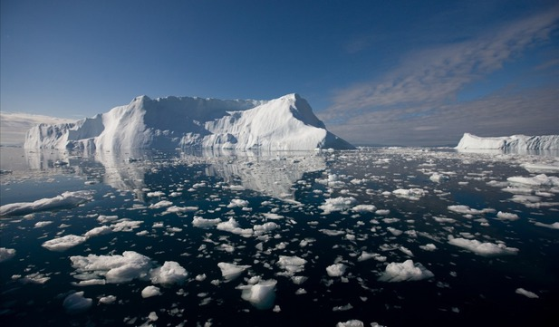

1.Apa , o creație bizară
La prima vedere, nimic mai simplu si mai obișnuit ca apa – banala apă de care avem parte toată ziua. Curge la robinet, cade din cer, se găsește de cumpărat peste tot – într-adevăr, în țările binecuvântate cu resurse hidrice, ca marea majoritate a statelor Europei – APA E CEVA CUM NU SE POATE MAI BANAL.
Nici din punct de vedere chimic nu pare să fie vorba despre ceva prea complicat: o moleculă alcătuită din doi atomi de hidrogen și unul de oxigen, o formulă chimică scurtă și simplă: H2O. Mare lucru! Și copiii știu asta! Dar savanții care studiază straniul lichid ce ne alcătuiește și ne înconjoară sunt în continuare entuziasmați, uluiți, frustrați uneori – căci apa dezvăluie noi și noi ciudățenii, iar uneori refuză cu încăpățânare să-și dezvăluie secretele…Apa este poate cea mai bizară dintre creațiile chimice ale naturii. E cea mai studiată substanță de pe Pământ și, totuși, are încă atât de multe necunoscute, încât cercetătorii se simt îndemnați să o studieze în continuare, cu mijloace din ce în ce mai sofisticate. E un compus plin de ciudățenii, o substanță paradoxală: în starea sa lichidă, are multe proprietăți neobișnuite pentru un lichid. În stare solidă – gheața –, se comportă diferit de multe alte solide. Și vaporii de apă au ciudățeniile lor. Proprietățile electrice ale apei, vâscozitatea, tensiunea superficială și numeroase alte trăsături sunt surprinzătoare pentru savanți.
Structura moleculară a apei este cunoscută multora dintre noi: o moleculă în forma de V, alcătuită din doi atomi de hidrogen legați de unul de oxigen. Dar – un lucru mai puțin știut – aceste molecule nu sunt stabile; nici vorbă ca, odată legați de un atom de oxigen, cei doi atomi de hidrogen să rămână acolo pe vecie. În stare lichidă, moleculele de apă iși schimbă întruna atomii de hidrogen între ele. Procesul se accelerează într-un mediu acid sau bazic. Chiar și într-un mediu neutru (pH 7), timpul mediu pe care îl petrec împreună cei trei atomi dintr-o moleculă de apă este de numai o milisecundă. Așadar, apa e permanent în mișcare, chiar la nivel molecular.
2.Sustinerea vietii
Apa are o importanta deosebita pentru viata omului, a plantelor si a animalelor. Fara apa, plantele se ofilesc si mor; animalele erbivore,fara hrana mor si ele, iar animalele carnivore fara hrana si fara adapost vor avea aceeasi soarta. Omul nu poate trai fara apa pe care o ia din natura. Apa din natura trebuie sa fie curata, adica sa nu contina substante toxice,daunatoare vietii. Apa pe care omul o foloseste pentru baut trebuie sa fie apa potabila. Apa din jurul fabricilor,fermelor de animale, oraselor mari este poluata. Ca apa sa devina potabila, omul o trateaza, folosind filtre speciale. In raurile poluate, plantele sunt primele care dispar,apoi incep sa moara si animalele cu cea mai mica rezistenta,cum ar fi pesti. Uneori , in urma unor greseli, se evacueaza in ape reziduuri otravitoare in cantitati foarte mari, ceea ce provoaca adevarate masacre. Nevoile zilnice maresc continuu consumul de apa in gospodariile oamenilor. Respectarea legilor tarii in domeniul ocrotirii factorilor mediului inconjurator este o indatorire a fiecarui om.
3.Calota glaciară
Apa este prezentă în formă solidă în zona polilor și în regiunile montane, acolo unde altitudinea și temperaturile îi permit. Deși la prima vedere nu ne dăm seama, calota glaciară influențează viața de pe Terra mult mai profund decât își poate închipui marea majoritate. Datorită curenților oceanici, gheața de la poli menține în echilibru climatul planetar. Gheaţa nu a mai lipsit de pe planeta noastră din Eocen, de acum 34 milioane de ani. Dacă o astfel de perioadă s-ar repeta, nivelul mării ar creşte cu 65 de metri, ţărmurile s-ar schimba şi o bună parte a lumii aşa cum o ştim acum ar fi sub apă. În jur de 20.000.000 de kilometri cubi de gheaţă, 80% doar în estul Antarcticii, se află în acest moment pe Pământ. Oamenii de ştiinţă cred că ar dura mai mult de 5.000 de ani pentru ca întreaga cantitate să se topească, dar, în cazul în care acest lucru s-ar întâmpla, multe dintre porturile, oraşele, sau chiar ţările cunoscute astăzi ar ajunge sub apă. National Geographic a realizat o serie de hărţi ale planetei inundate, anunţă dailymail.co.uk. Doar în ultimul secol, temperatura medie pe glob a urcat cu jumătate de grad Celsius, astfel că nivelul mărilor şi oceanul a crescut cu 17 centimetri. Apele din ce în ce mai calde ale oceanelor au început să topească gheaţa care pluteşte în vestul Antarcticii şi se estimează că din 1992 aceasta pierde 65 de milioane de tone anual. Ultima perioadă în care Pământul nu a avut zone cu gheaţă permanentă a fost acum 34 de milioane de ani, în Eocen, o perioadă de încălzire globală puternică. Gheaţa din jurul polilor cu care suntem obişuniţi lipsea complet, iar diferenţele de temperatură dintre ecuator şi extremele planetei erau minore. Dacă această perioadă s-ar repeta şi dacă încălzirea globală ar provoca topirea calotei glaciare şi revărsarea acesteia în apele oceanelor, întreaga geografie a planetei ar suferi modificări serioase. Creşterea nivelului apei la poli ar avea un efect de domino asupra celorlalte mări şi oceane, care ar înghiţi zone întregi. Porturile ar ceda primele, Londra şi Veneţia s-ar afla sub ape şi ţări întregi, cum sunt Olanda sau Danemarca ar dispărea complet de pe faţa Pământului. Florida, sau San Diego ar fi acoperite de ape, în timp ce dealurile din San Francisco ar ajunge probabil nişte insule. Estul Chinei şi Bangladeshul ar fi inundate şi, după estimările actuale, în jur de 750 de milioane de persoane şi-ar pierde viaţa. Efectul de seră şi încălzirea globală care ar putea să declanşeze acest scenariu sunt înrăutăţite de oameni. "Dacă ardem toate resursele de cărbuni, petrol şi gaze şi adăugăm încă 5 trilioane de carbon atmosferei, am putea să ridicăm temperatura planetei de la 14 grade Celsius în prezent, la 26 de grade", explică experţii citaţi de National Geographic. Oamenii de ştiinţă spun că în cazul în care temperatura s-ar ridica suficient de mult încât să provoace astfel de inundaţii masive, apa nu ar fi cea mai mare problemă a noastră, întrucât căldura ar face ca o mare parte a planetei să devină nelocuibilă.
4.Oceanele și mările Terrei
Oceanul planetar reprezintă o mare parte din apa Terrei în formă lichidă. Cu tehnologia crescând în ritm exponențial este foarte ușor să uităm cum am ajuns în acest punct. Timp de aproape două mii de ani, Marea Mediterană a reprezentat leagănul a nenumărate regate și imperii care s-au dezvoltat pe baza pescuitului și a comerțului care se realize în bazinul mediteranean. Pentru Egiptul Antic, deschiderea spre mare a asigurat o piață de desfacere vastă și o bogăție de care vechiul regat a beneficiat timp de secole. Pentru grecii antici, marea a permis înființarea de colonii de pe malurile Peninsulei Crimeea, până pe țărmurile galice. Această răspândirea a grecilor a permis și un schimb de cunoștințe cu civilizațiile intrate în contact. O dată cu începuturile erei coloniale, centrul comercial s-a mutat din Veneția în țări ca și Spania, Portugalia, Olanda, Franța și Anglia. Acestea s-au succedat una pe cealaltă ca puteri militare, economice și coloniale. Astăzi, oceanul planetar rămâne cea mai ieftină și folosită cale de a transporta bunuri pe care o avem la dispozție.
